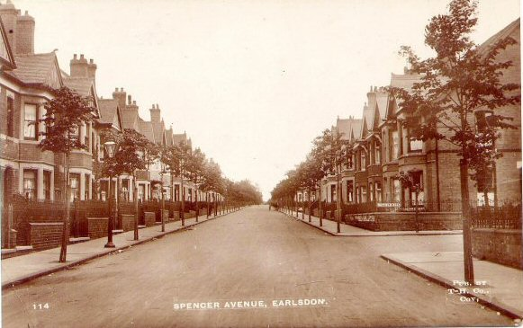
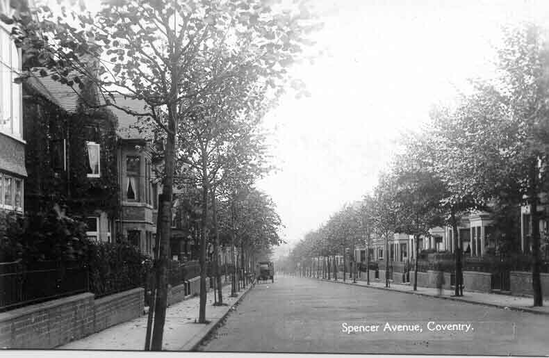

Spencer Avenue Spencer Road was first constructed to link Earlsdon to Warwick Road but it originally ended at Spencer Park. Twenty five years after its original construction it was extended through the park and on to Albany Road. This extension became Spencer Avenue. Like the park, both Spencer Road and Spencer Avenue were named after David Spencer, a Coventry Draper and Wool Merchant. As well as presenting the land for the park in 1882, six years before his death, he was also a generous contributor to numerous other local charitable causes. The young trees in this and some other roads in Earlsdon were a nod in the direction of the idea of a ‘garden suburb’ being experimented with in a more comprehensive way elsewhere in England.  |